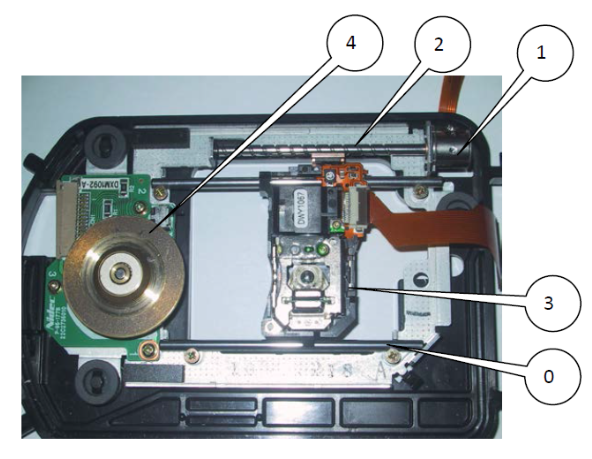
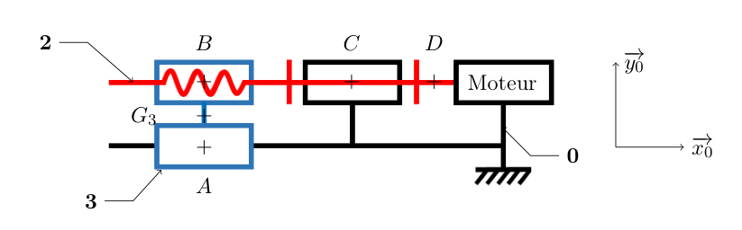
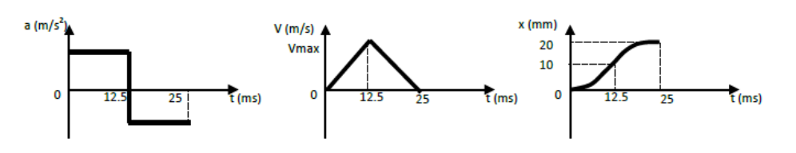
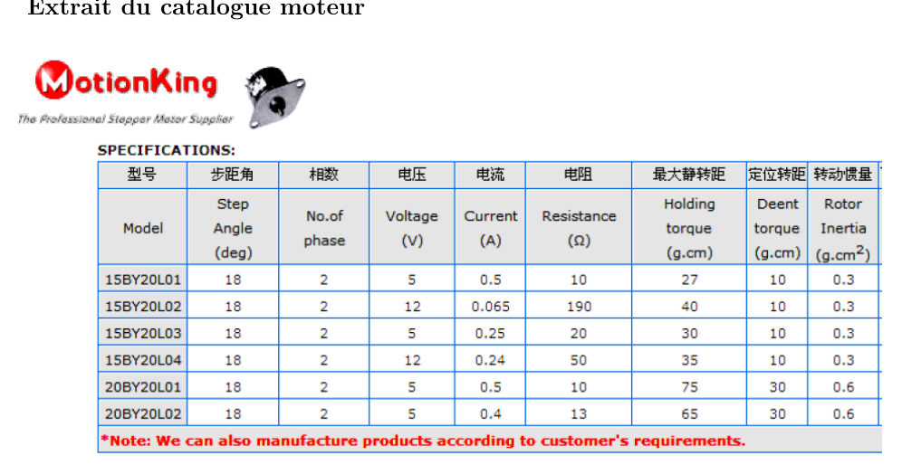

AM2 · SI · Chapitre 3 — Principe fondamental de la dynamique (TD)
Lecteur de DVD : correction détaillée
Un exercice du TD « Principe fondamental de la dynamique » (CPGE PT, S2I). Pour chaque question,
on dit d'abord ce qu'elle demande, puis la démarche, puis le calcul complet. Les encadrés à droite
donnent la méthode, la formule à retenir ou le piège à éviter.
1. Avant de commencer : l'essentiel en quelques lignes
Le principe fondamental de la dynamique (PFD)
Le PFD relie les actions qui agissent sur un objet à la façon dont il accélère.
Il existe deux versions utiles ici :
En translation (le chariot glisse) : la somme des forces est égale à la masse fois l'accélération,
\(\sum \vec F = m\,\vec a\).
En rotation autour d'un axe fixe (la vis tourne) : la somme des moments autour de cet axe est égale à
l'inertie fois l'accélération angulaire, \(\sum M = I\,\ddot\theta\).
Les mots du TD
Torseur de liaison : une liaison entre deux pièces transmet des actions. On les écrit sous forme
de deux vecteurs : une résultante (forces \(X, Y, Z\)) et un moment (couples \(L, M, N\)).
Les lettres sont les inconnues du problème.
Liaison hélicoïdale : c'est une liaison « vis-écrou ». Quand la vis tourne d'un tour, l'écrou avance
d'une distance appelée pas \(p\).
Liaison glissière : une pièce ne peut que glisser le long d'un axe (ici les deux colonnes, direction \(\vec x_0\)).
Liaison pivot : une pièce ne peut que tourner autour d'un axe.
Le système en une chaîne
Moteur 1couple \(C_m\)Vis 2liaison hélicoïdale, pas \(p\)Chariot 3 (diode laser)
Le moteur fait tourner la vis. La vis fait avancer le chariot, qui porte la diode laser. Le chariot est guidé par deux
colonnes fixées au bâti 0 : il ne peut donc que glisser, pas tourner.

Le lecteur de DVD ouvert. Pièce 3 : le chariot avec la diode laser. Pièce 2 : la vis. Pièce 1 : le moteur.
Pièce 0 : le bâti. Pièce 4 : le plateau qui fait tourner le DVD (non étudié ici).
Ce que demande le TD au final
Trouver le couple que le moteur doit fournir pour accélérer le chariot, puis trouver le pas de vis
qui rend ce couple le plus petit possible, et enfin vérifier que le moteur choisi convient.
2. La démarche en 5 étapes
Toute la correction suit le même fil. Chaque étape produit une équation qu'on réutilise dans la suivante :
Isoler le chariot 3 et appliquer le PFD en translation (questions 1 à 3). On obtient l'effort
\(X_{23}=m_3\,a\).
Isoler la vis 2 et appliquer le PFD en rotation (questions 4 à 6). On obtient
\(C_m + L_{32} = I_{vis}\,\ddot\theta\).
Relier translation et rotation grâce au pas de la liaison hélicoïdale (question 7).
Éliminer les inconnues pour exprimer \(C_m\) en fonction de \(a\) et de \(p\) (question 8).
Optimiser le pas (question 9), puis faire l'application numérique et choisir le moteur (questions 10 et 11).
3. Le modèle et les données
Le modèle (schéma de l'énoncé, hypothèses, données) est rappelé ici. Le schéma de l'énoncé est répété juste au-dessus de la correction de la question 1.
Hypothèses (à garder en tête)
Les liaisons sont parfaites : pas de frottement.
Le centre de gravité de la vis est sur l'axe de rotation.
Le poids de la vis est négligé.
Le couple moteur \(C_m\) est constant pendant le démarrage.
Données numériques
Grandeur
Valeur
Signification
\(m_3\)
10 g = \(0{,}01\) kg
masse du chariot (laser compris)
\(I_{vis}\)
\(4{,}2\cdot10^{-9}\) kg·m²
inertie de la vis autour de son axe (modèle SolidWorks)
\(p\)
à déterminer
pas de la vis (distance avancée par tour)
\(g\)
9,81 m·s⁻²
pesanteur
4. Correction question par question
Partie A — Le chariot 3 (questions 1 à 3)
Énoncé (modèle de l'exercice)

Schéma du modèle. Les points \(B\), \(C\), \(D\), \(A\) sont les points de liaison. La vis 2 tourne autour de l'axe
\((D,\vec x_0)\). Le chariot 3 glisse suivant \(\vec x_0\).
Q1 Quel est le mouvement de 3 par rapport à 0 ?
La question en clair
Le chariot tourne-t-il, glisse-t-il, ou fait-il autre chose ? Dans quelle direction ?
Démarche
Le chariot est guidé par deux colonnes parallèles à \(\vec x_0\). Une pièce guidée ainsi ne peut que glisser le long de ces colonnes.
Il suffit donc de donner la direction de ce glissement.
Réponse
Le chariot 3 a une translation rectiligne de direction \(\vec x_0\) par rapport à 0.
Tous ses points ont la même vitesse et la même accélération. Un seul paramètre suffit : la position \(x(t)\), avec \(a=\ddot x\).
Q2 Établir l'inventaire des actions mécaniques extérieures sur 3.
La question en clair
Lister tout ce qui pousse ou retient le chariot, en l'écrivant sous forme de torseurs. « Extérieur » signifie : venant d'une autre pièce.
Démarche
Le poids du chariot, toujours présent, appliqué en son centre de gravité \(G_3\).
La glissière avec le bâti 0, aux colonnes, au point \(A\).
La liaison hélicoïdale avec la vis 2, au point \(B\).
Pour chaque liaison, on met une inconnue par composante. Une liaison qui laisse libre un mouvement annule la composante correspondante :
la glissière laisse le chariot glisser suivant \(\vec x_0\), donc il n'y a aucune force suivant \(\vec x_0\) venant de 0.
Réponse
Trois actions : le poids (\(-m_3 g\,\vec y_0\) en \(G_3\)), la glissière en \(A\) (forces \(Y_{03},Z_{03}\) et moments \(L_{03},M_{03},N_{03}\)),
l'hélicoïdale en \(B\) (forces \(X_{23},Y_{23},Z_{23}\) et moments \(L_{23},M_{23},N_{23}\)).
Q3 Appliquer le PFD à la pièce 3 (projection sur \(\vec x_0\) seulement).
La question en clair
Écrire l'équation qui relie les forces agissant sur 3 à son accélération. On ne garde que la projection sur \(\vec x_0\),
car c'est la seule direction utile pour trouver \(X_{23}\).
Démarche
PFD en résultante : \(\sum \vec F_{\text{ext}\to3}=m_3\,\vec a_{G_3\in3/0}\).
L'accélération est suivant \(\vec x_0\) : \(\vec a = a\,\vec x_0\).
On projette sur \(\vec x_0\). Le poids et \(Y, Z\) sont perpendiculaires à \(\vec x_0\) : leur projection est nulle. Il reste \(X_{23}\).
Réponse
\(X_{23}=m_3\,a\). L'effort axial de la vis sur le chariot est égal à la masse du chariot fois son accélération.
Ce que ça veut dire : avec \(a=128\) m·s⁻² (question 10), \(X_{23}=0{,}01\times128=1{,}28\) N.
C'est l'effort que la vis doit exercer pour pousser le chariot.
Partie B — La vis 2 (questions 4 à 6)
Q4 Quel est le mouvement de 2 par rapport à 0 ?
La question en clair
La vis tourne-t-elle, glisse-t-elle, ou les deux ? Autour de quel axe ?
Démarche
La vis est posée sur son axe, dans le bâti, et ne fait que tourner (elle ne se déplace pas en translation).
Son axe est \((D,\vec x_0)\).
Réponse
La vis 2 a une rotation d'axe \((D,\vec x_0)\) par rapport à 0. On note son angle \(\theta(t)\),
sa vitesse \(\dot\theta=\omega_{2/0}\) et son accélération angulaire \(\ddot\theta\).
Q5 Établir l'inventaire des actions mécaniques extérieures sur 2.
La question en clair
Lister ce qui agit sur la vis : le moteur, le bâti (au pivot \(C\)) et le chariot (à l'hélicoïdale \(B\)).
Démarche
Moteur 1 → 2 en \(D\) : le moteur donne un couple \(C_m\) autour de \(\vec x_0\), sans force.
Bâti 0 → 2 en \(C\) : c'est un pivot. Il laisse la rotation libre, donc il ne transmet pas de couple suivant \(\vec x_0\) (\(L_{02}=0\)).
Chariot 3 → 2 en \(B\) : l'hélicoïdale. Elle transmet un effort axial et un couple axial \(L_{32}\).
Action-réaction : \(\{\tau_{3\to2}\}=-\{\tau_{2\to3}\}\). Donc \(L_{32}=-L_{23}\) et \(X_{32}=-X_{23}\).
Réponse
Trois actions : le couple moteur \(C_m\) en \(D\), le pivot en \(C\) (sans couple suivant \(\vec x_0\)), et l'hélicoïdale en \(B\) avec le couple axial \(L_{32}\).
Q6 Appliquer le PFD à la pièce 2 (moment en \(D\), projeté sur \(\vec x_0\)).
La question en clair
Écrire l'équation qui relie les couples autour de l'axe de la vis à son accélération angulaire.
Démarche
PFD en rotation autour d'un axe fixe : \(\sum M_{D,\text{ext}\to2}\cdot\vec x_0 = I_{vis}\,\ddot\theta\).
On prend le moment en \(D\), point de l'axe de rotation. Un effort appliqué sur l'axe (au point \(B\) ou \(C\)) ne crée aucun moment suivant cet axe.
Il ne reste donc que les couples axiaux : \(C_m\) (moteur) et \(L_{32}\) (hélicoïdale). Le pivot donne \(0\).
\[C_m + L_{32} = I_{vis}\,\ddot\theta\]
Réponse
\(C_m + L_{32} = I_{vis}\,\ddot\theta\). Le moteur accélère la vis, et le chariot « freine » la vis par le couple \(L_{32}\).
Partie C — Le lien entre translation et rotation (questions 7 et 8)
Q7 Relation entre \(X_{23}\), \(L_{23}\) et \(p\), puis entre \(\ddot\theta\), \(a\) et \(p\).
La question en clair
Quand la vis tourne, le chariot avance. Comment la distance d'avance est-elle liée à l'angle, et l'effort axial au couple axial ?
Démarche
Avance du chariot : un tour de vis (\(\Delta\theta = 2\pi\)) fait avancer le chariot de \(p\).
Donc un angle \(\theta\) donne une avance \(x=-\dfrac{p}{2\pi}\,\theta\). Le signe moins vient de la convention « pas à droite » du TD.
Dérivées : on dérive une fois (vitesse), puis deux fois (accélération) :
\(\dot x=-\dfrac{p}{2\pi}\dot\theta\) et \(a=-\dfrac{p}{2\pi}\ddot\theta\).
Couple axial : dans une liaison hélicoïdale parfaite, la puissance développée est nulle. Cela impose que le couple axial et l'effort axial soient liés par le même rapport \(p/2\pi\).
C'est le même principe que le tire-bouchon : tourner fait avancer, et pousser crée un couple.
Interprétation. Le couple est la somme de deux termes :
\(\dfrac{2\pi I_{vis}}{p}\) : le couple pour faire tourner la vis elle-même ;
\(\dfrac{p\,m_3}{2\pi}\) : le couple pour faire avancer la masse du chariot, « ramenée » sur l'arbre moteur.
C'est le sens de \(I_{eq}\) : la masse qui avance se comporte, vue du moteur, comme une inertie supplémentaire.
Partie D — Le pas optimal (question 9)
Q9 Quelle valeur du pas \(p\) rend le couple moteur minimal ?
La question en clair
Parmi tous les pas possibles, lequel demande le moins de couple au moteur ? C'est un problème de minimum.
Démarche
Seul \(p\) varie. \(a\), \(I_{vis}\) et \(m_3\) sont des constantes.
On dérive \(|C_m|\) par rapport à \(p\) et on cherche où la dérivée s'annule (c'est la condition d'un extremum).
On vérifie que c'est bien un minimum (dérivée seconde positive).
On fait l'application numérique avec les unités du SI (mètres, kilogrammes).
Réponse
\(p_{opt}=2\pi\sqrt{I_{vis}/m_3}\approx 4{,}07\) mm.
La section 5 montre cette courbe : elle a bien un minimum en 4,07 mm.
Partie E — Application numérique (questions 10 et 11)
Q10 Calculer l'accélération \(a\).
La question en clair
Le cahier des charges donne un graphe de la position du chariot en fonction du temps. Il faut en tirer l'accélération.

Extrait du cahier des charges : accélération \(a(t)\), vitesse \(V(t)\) et position \(x(t)\). Le mouvement dure 25 ms,
avec une phase d'accélération puis une phase de décélération symétriques.
Démarche
Lire le graphe de \(x(t)\) : à \(t=12{,}5\) ms, \(X=10\) mm.
Le graphe de \(a(t)\) montre une accélération constante pendant la première moitié. Le chariot part de l'arrêt (\(x=0\), \(v=0\)).
Donc \(x(t)=\tfrac12\,a\,t^2\).
Réponse
\(a = 128\) m·s⁻² (environ 13 fois \(g\)). C'est une accélération forte, qui explique un couple moteur non négligeable.
Coquille dans le corrigé
Le texte écrit « \(t=12{,}5\) s ». C'est une erreur de frappe : il faut lire 12,5 ms. Le calcul numérique du corrigé utilise bien \(12{,}5\cdot10^{-3}\) s.
Q11 Calculer \(C_m\) avec le pas réel \(3{,}6\) mm et conclure.
La question en clair
La vis réelle a un pas de 3,6 mm, pas 4,07 mm. Quel couple faut-il avec ce pas, et ce pas est-il bon ?
Démarche
On reprend la formule de la question 8 et on remplace par les valeurs : \(p=3{,}6\cdot10^{-3}\) m, \(a=128\) m·s⁻², \(I_{vis}=4{,}2\cdot10^{-9}\) kg·m², \(m_3=0{,}01\) kg.
Conversion en g·cm (le catalogue moteur est en g·cm) : 1 g·cm = 9,81·10⁻⁵ N·m, donc
\(1{,}67\cdot10^{-3}/9{,}81\cdot10^{-5}\approx 17\) g·cm.
Petit écart avec le corrigé
Le corrigé écrit 16,7 g·cm : il a pris 1 N·mm ≈ 10 g·cm. Avec \(g=9{,}81\), on trouve 17 g·cm. L'écart est de 2 %, sans conséquence pour le choix du moteur.
Comparaison avec le pas optimal :
Pour \(p=3{,}6\) mm : \(|C_m|=1{,}67\) N·mm.
Pour \(p=4{,}07\) mm (optimal) : \(|C_m|=1{,}66\) N·mm.
Écart : environ 0,8 %.
Conclusion
Le couple nécessaire est \(|C_m|\approx1{,}67\) N·mm, soit environ 17 g·cm. Le pas réel de 3,6 mm donne un couple presque minimal : il est proche de l'optimum.
Le cahier des charges demande aussi de la précision : une vis fine avance peu à chaque tour, ce qui facilite le positionnement.
Le pas réel est donc un compromis entre précision et couple minimal.
Choix du moteur (suite de la question 11)
Quel moteur du catalogue choisir ?
La question en clair
Le moteur doit fournir au moins 17 g·cm, fonctionner sous la tension disponible dans le PC (5 V) et être le plus compact possible.

Extrait du catalogue moteur. Le couple de maintien (holding torque) est le couple maximal que le moteur peut tenir à l'arrêt,
alimenté. Le couple de détente (detent torque) est le couple résiduel moteur non alimenté. Le rotor inertia est l'inertie du rotor.
Démarche
On élimine les moteurs alimentés en 12 V : le PC fournit 5 V.
On garde ceux dont le couple de maintien est supérieur à 17 g·cm.
Parmi eux, on prend le plus petit (série 15 plutôt que 20), donc le moins de couple inutile et le plus compact.
Modèle
Tension
Couple de maintien
Résultat
15BY20L01
5 V
27 g·cm
convient, le plus petit
15BY20L03
5 V
30 g·cm
convient, un peu plus gros
15BY20L02
12 V
40 g·cm
écarté (12 V)
15BY20L04
12 V
35 g·cm
écarté (12 V)
20BY20L02
5 V
65 g·cm
convient, mais plus gros
20BY20L01
5 V
75 g·cm
convient, mais plus gros
Réponse
Moteur retenu : 15BY20L01 (5 V, couple de maintien 27 g·cm, soit environ 1,6 fois le besoin de 17 g·cm).
Le corrigé officiel dit seulement que « tous les moteurs conviennent » et qu'on prend 5 V : le choix du 15BY20L01 est le nôtre.
Point de vigilance (hors TD, à confirmer avec le prof)
Le TD compare le couple nécessaire au couple de maintien, qui est une valeur à l'arrêt. Il ne tient pas compte de l'inertie du rotor du moteur.
Or le rotor est lui aussi accéléré. Avec \(I_{rotor}=0{,}3\) g·cm² \(=3\cdot10^{-8}\) kg·m² (catalogue) et
\(|\ddot\theta|=\dfrac{2\pi}{p}|a|\approx2{,}2\cdot10^{5}\) rad·s⁻², le rotor demande environ \(6{,}7\) N·mm de plus.
Le couple total serait alors d'environ \(8{,}4\) N·mm, soit environ 85 g·cm, ce qui dépasse 27 g·cm.
Le choix du moteur est donc à vérifier : il faudrait sans doute un moteur plus puissant, ou un autre pas.
5. Graphique : le couple en fonction du pas
On trace \(|C_m|\) en fonction de \(p\), avec \(|a|=128\) m·s⁻², \(I_{vis}\) et \(m_3\) constants. La courbe a un minimum,
et elle est assez plate autour de ce minimum : un pas entre 3,5 et 5 mm donne un couple presque identique.
Couple nécessaire \(|C_m|\) selon le pas \(p\). Point rouge : minimum à 4,07 mm (1,66 N·mm). Point bleu : pas réel 3,6 mm (1,67 N·mm).
Trait pointillé : couple de maintien du moteur retenu (27 g·cm).
Pas optimal : \(p_{opt}=2\pi\sqrt{I_{vis}/m_3}\approx4{,}07\) mm. Le pas réel 3,6 mm est presque optimal.
Application : \(a=128\) m·s⁻², \(|C_m|\approx1{,}67\) N·mm, soit environ 17 g·cm. Moteur retenu : 15BY20L01 (sous réserve de la vérification de l'inertie du rotor).